@CBSNews
📝 原文: Justice Department asks court to reinstate criminal charges against Kilmar Abrego Garcia
🇨🇳 译文: 司法部要求法院恢复对基尔马·阿布雷戈·加西亚的刑事指控

🕒 2026-08-18T02:27:14+00:00
| 来源 | 旧窗口内数量 | 本次新增 | 本次淘汰 | 当前窗口内共有 |
|---|---|---|---|---|
| 推文 + Dawn 新闻 | 0 | 46 | 0 | 46 |
| ARY News | 0 | 0 | 0 | 0 |
注：淘汰数 = 旧窗口内数量 + 本次新增 - 当前窗口内共有
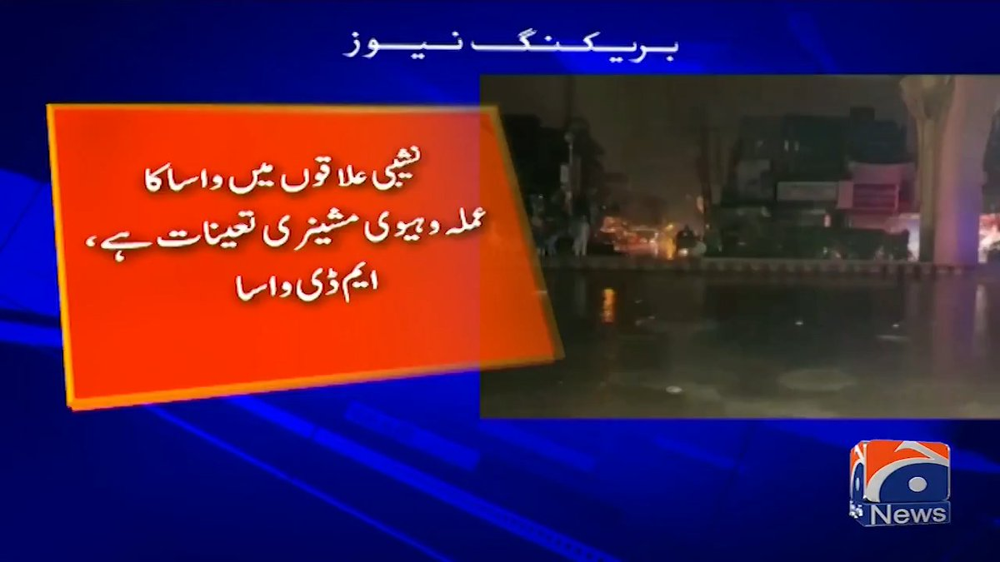
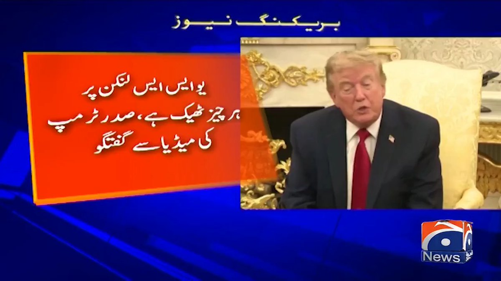
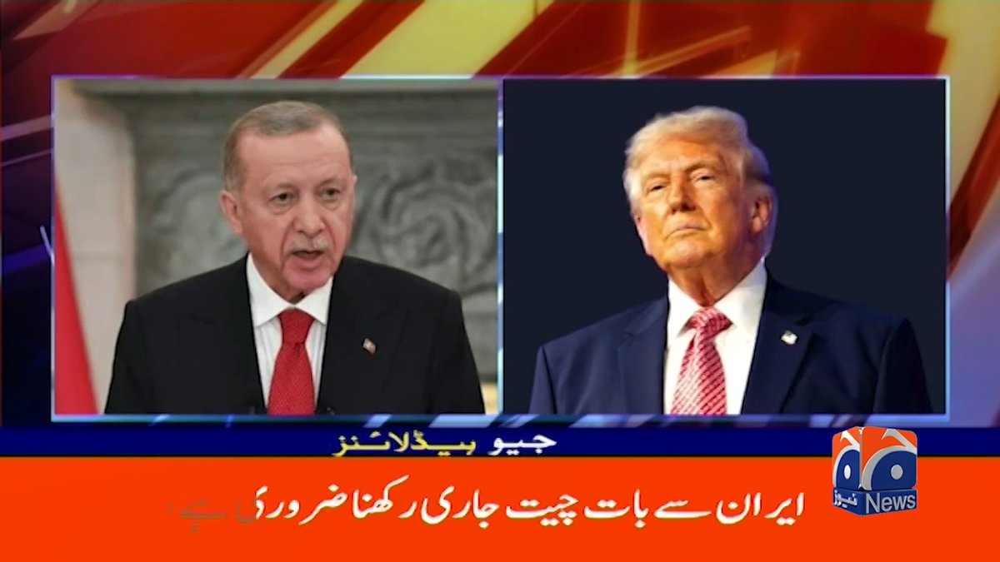
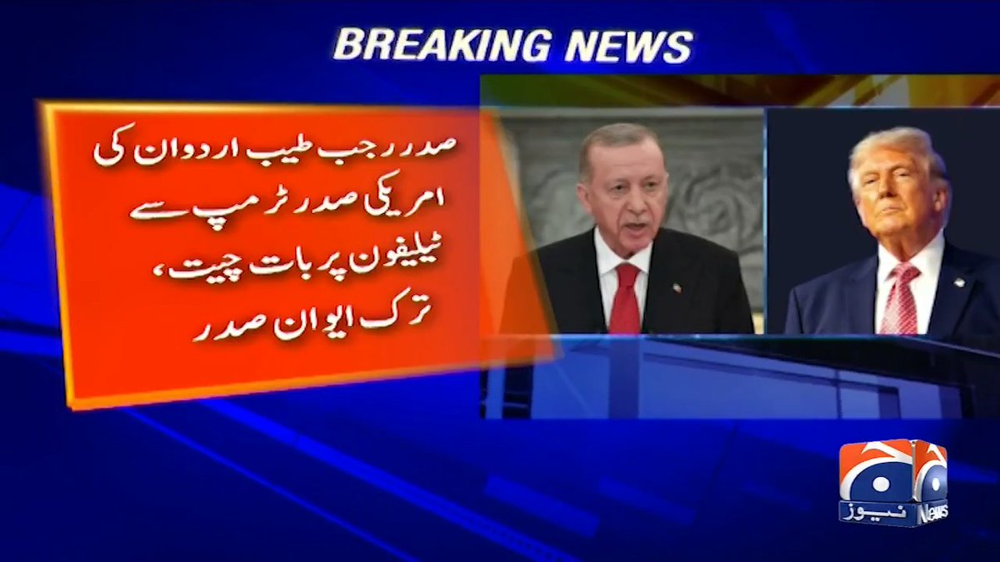
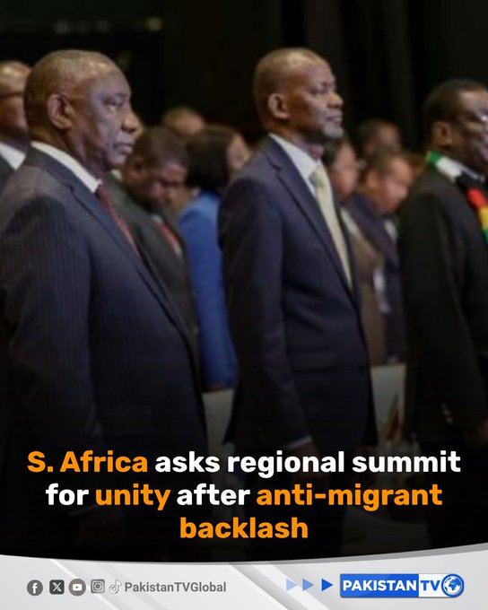
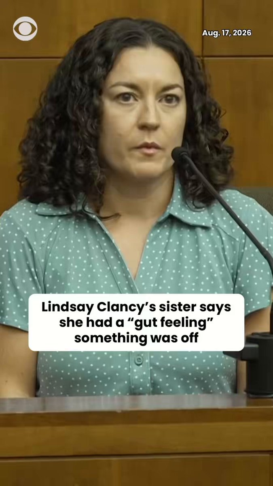
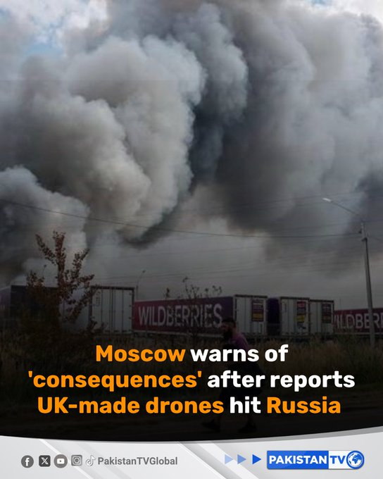
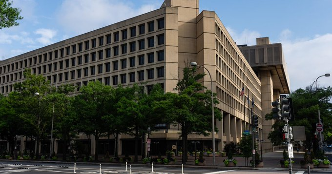
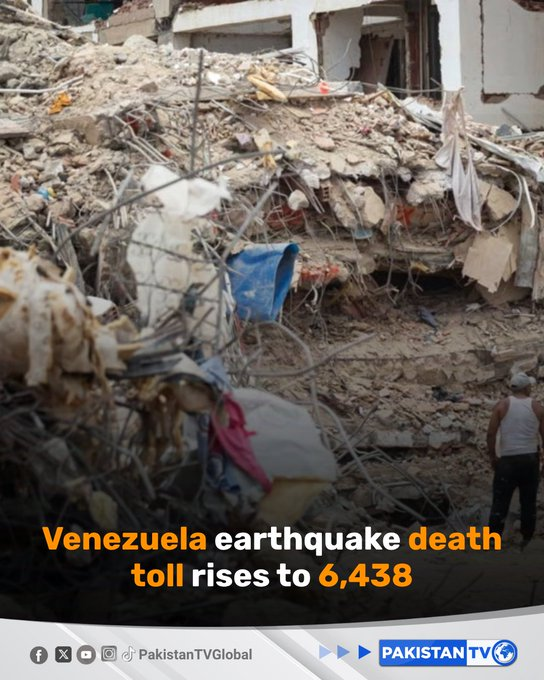
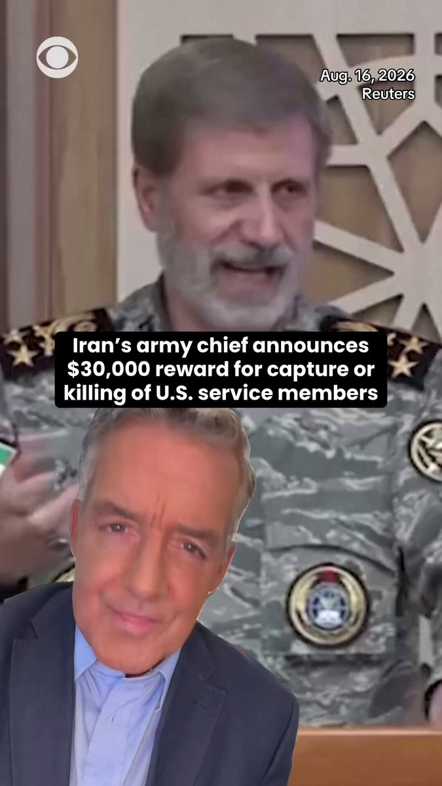
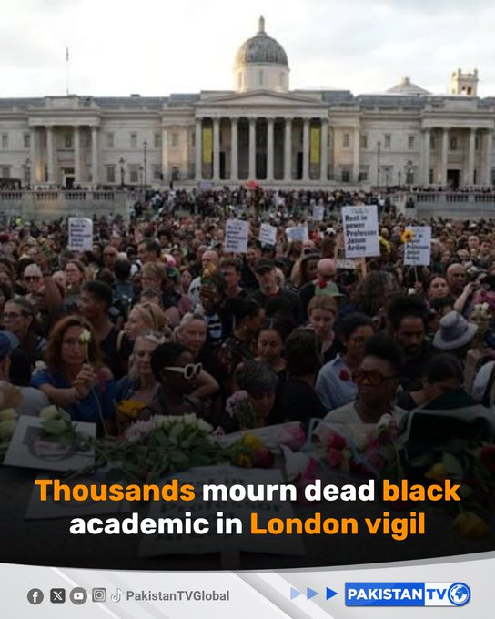


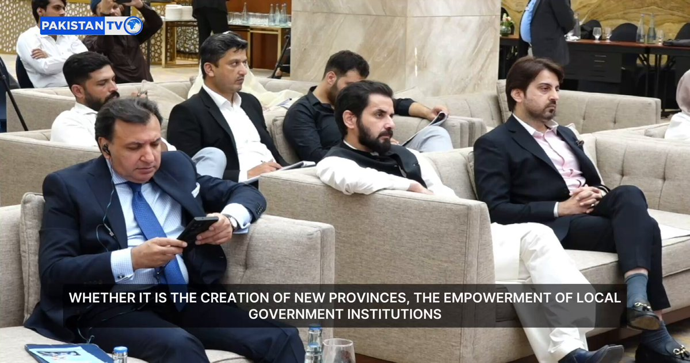
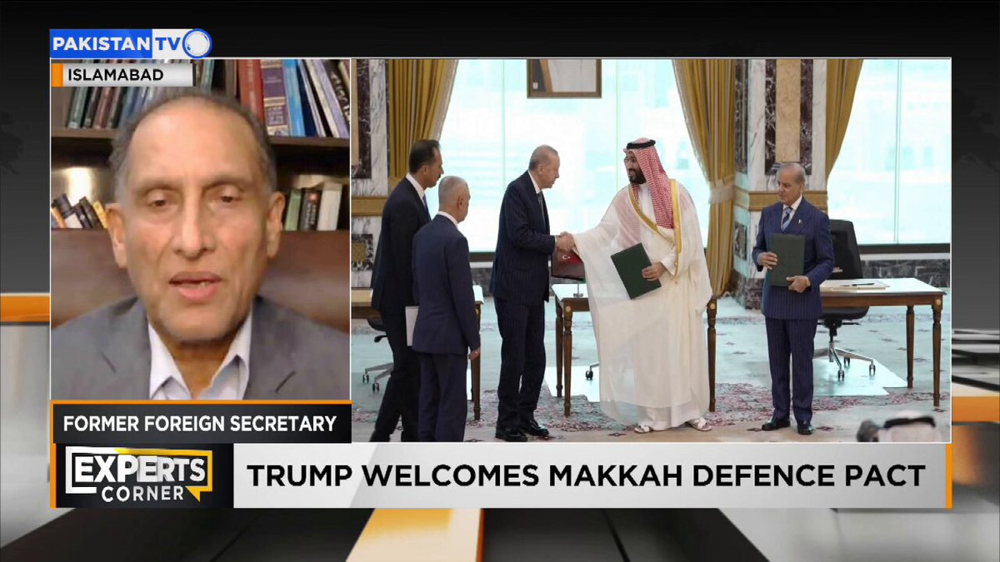


暂无文章。